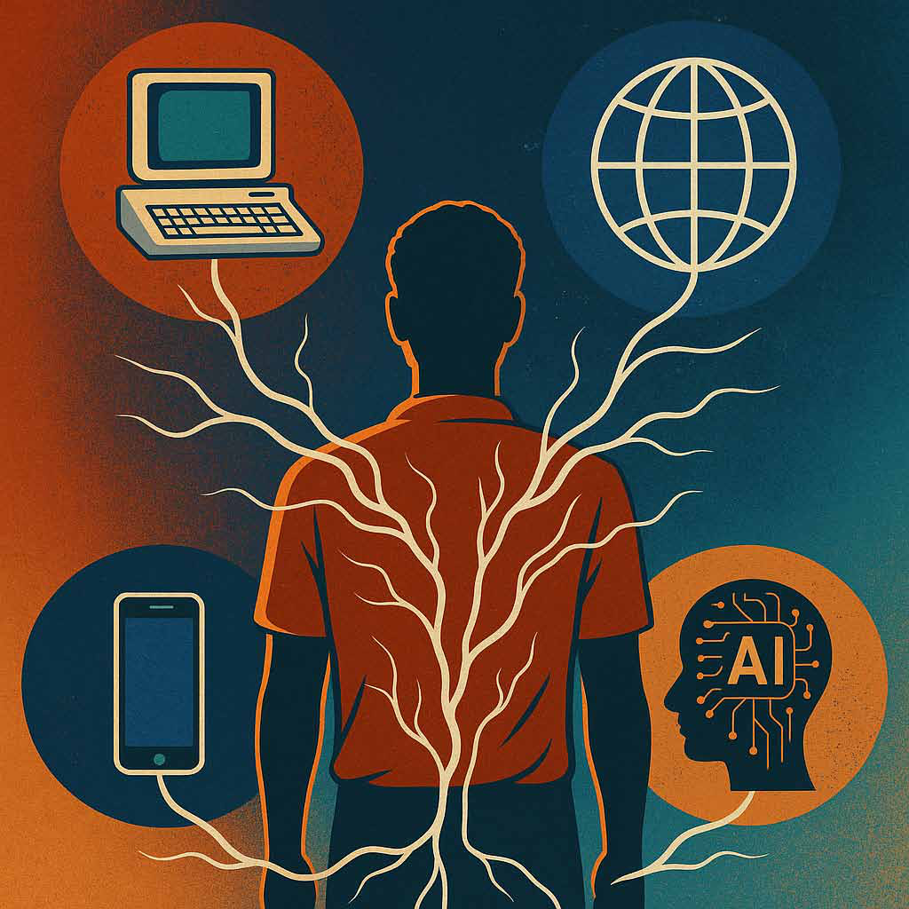

Living Through Four Revolutions: How Computers, Internet, Mobiles, and AI Redefined the Human Story
Living Through Four Revolutions: How Computers, Internet, Mobiles, and AI Redefined the Human Story
Jaffna Monitor hellojaffnamonitor@gmail.com 33 F orty-five years ago, I walked into this assembly hall thrice a week for morning assembly. My classmates and I always sat over on that side. Today, I thought I would share with you four technological revolutions that happened between then and now. They are intertwined with my career. For all of us, this is an exciting time to be alive. I think it is not an understatement to say that never before in human history did people have the opportunity to engage with multiple technological revolutions within their lifetimes. In telling the story of these four revolutions, I hope to draw your attention to cautionary tales. As young people full of hopes and dreams, I want you to marvel at the magical wonders that technology brings us. But I also want you to be aware of potential concerns they raise, and why you should equip yourself with the knowledge and skills you need to navigate the promises and pitfalls of new technologies. Living Through Four Revolutions: How Computers, Internet, Mobiles, and AI Redefined the Human Story BY: Prof. N. Asokan Prof. N. Asokan was invited to give a short “morning assembly talk” at his alma mater, Trinity College, Kandy. The following is the transcribed version of his inspiring speech, reflecting on the four major technological revolutions that have shaped our world-and his life. He writes under the pen name 'eḻuttukkiṉiyavaṉ', including for Jaffna Monitor.
Jaffna Monitor hellojaffnamonitor@gmail.com 34 The four revolutions are: the computer and software revolution, the Internet revolution, the mobile phone revolution, and the artificial intelligence revolution. The Computer and Software Revolution The first, the computer and software revolution, was already under way when I sat there forty-five years ago. Until the 1970s computers were expensive and rare. They cost hundreds of millions of rupees and filled entire rooms. Only select organizations like governments and universities and big companies in rich countries could afford them. By the late 1970s, technology had advanced so far that computers could fit on a desktop. They were then called “microcomputers”. Many companies sprang up, building the hardware and software for microcomputers. The first Apple computers arrived in 1976. IBM introduced a microcomputer in 1981, calling it a “personal computer” or “PC” for short. That name stuck. A new startup company began writing software for microcomputers. That was how Microsoft got its name — they wrote microcomputer software. By the late 1970s, ordinary people in western countries were able to buy home computers. Their kids started to grow up with computers. Forty-five years ago, computers were still extremely rare in Sri Lanka. But we all knew about them. I borrowed a book from the library and tried to teach myself to program. Without access to a computer, it was a little futile. Imagine trying to learn how to drive a car or ride a bicycle by reading a book! Trying to learn programming without a computer is a little like that. I saw my first computer at the University of Peradeniya. When I had to switch to Indian Institute of Technology, Kharagpur, I was sufficiently hooked to want to study computer science and engineering. Fast forward to now, computers are everywhere. They run all aspects of our lives. You may be carrying several of them right now: your watch, your phone, your tablet, your laptop; if you came to school in a vehicle, it likely had multiple on-board computers, even bicycles have them. Learning computer science turned out to be a good decision. Internet revolution The second was the Internet revolution. People realized early on that interconnecting computers will open up a whole new world of possibilities. By 1980, there were already different types of networks to interconnect computers. The Internet was conceived as a network of such networks. By 1990, ordinary people could connect their computers to the Internet. E-mail and file transfer existed already back then. Soon, the World Wide Web was invented, providing an easy way to navigate the information on the Internet. Suddenly there was an explosion of Internet activity. Companies big and small are connected to the Internet. New startups built entirely new businesses on the Internet, like Google, which provided an easy and effective way to search for information on the World Wide Web. Companies like Amazon began selling products over the Internet. This was known as “electronic commerce.” I went on to work at IBM in 1995 to do my doctoral research on electronic commerce just as Internet access began to be available in Sri Lanka. Today, it is difficult to imagine life without the Internet. One cannot really fully participate in society if one doesn’t have Internet access. Every aspect of human life from work to play found its manifestation on the Internet. The Internet lets people work remotely, do their shopping, watch their favorite sports, listen to music, and so on and so forth.
Jaffna Monitor hellojaffnamonitor@gmail.com 35 The World in Your Pocket: The Mobile Phone Revolution The third was the mobile phone revolution. The idea that a telephone could be a portable handheld device dates back to more than a century ago. But it became technically feasible only in the 1970s and was widely deployed only in the 1990s, but just for phone calls and text messages. People realized that mobile phones are little computers and can be made to do everything a computer could do. That led to the smartphone. The first smartphones, like the Nokia 9000 Communicator, began to appear in the late 1990s. I went to work for Nokia in its heyday. The Nokia motto was “Connecting People”. That was exactly what mobile phones made possible. You could connect to people you care about much more easily than before, at any time, from any place. At Nokia, I saw the mobile phone revolution unfolding in front of my eyes and was fortunate enough to be part of work that went on to benefit billions of people today, like helping to design Bluetooth pairing protocols that allow two Bluetooth

Jaffna Monitor hellojaffnamonitor@gmail.com 36 devices to easily and securely establish a connection. Today, mobile phones are universal. For many people, they are their first computers and their only means of connecting to others over the Internet. The Age of Artificial Intelligence The fourth and final revolution I want to discuss is the artificial intelligence, or AI, revolution. We are all living through it right now. People have always wondered about designing machines that can think and act like human beings. The term “AI” dates back to the 1950s. AI techniques became practical enough in the early 2010s when three things aligned: new approaches for training AI were developed, computers became dramatically more powerful than before, and, thanks to the Internet, large amounts of all sorts of data had already been collected which could now be used to train AI models quickly and effectively. By 2011, AI models could outperform humans in simple tasks like recognizing objects in pictures. Now they have become “generative,” capable of producing new content. We have generative AI models like ChatGPT and Midjourney and many more. They can generate text or images or videos when prompted. You have all seen how stunning the results are: they can generate text that looks flawless, images that look lifelike, and videos that are simply mind- blowing. Today, every profession and every aspect of human life are being impacted by AI. We don’t know how far this revolution will go. But we can already see that it will have a far greater impact on humanity than all of the previous three revolutions combined. AI will change the nature of work itself. Your careers will not follow the traditional paths that your parents and their parents followed, that is, starting as a junior and working your way up. You need to be nimble and proactive to succeed in this new workplace. Those of you who learn how to use AI in your own profession are more likely to succeed. But AI will also bring you new types of opportunities. For example, you may have heard of the concept of “solopreneurs” — entrepreneurs who successfully establish and run companies alone, without partners or employees. Being a solopreneur is very difficult; it requires an incredible breadth and depth of talent, dedication, and grit. But AI will allow more people of your generation to be solopreneurs. The Flip Side of Innovation: Fighting the Silent Threats There is no doubt that these revolutions have been stunning. They have brought great benefits to humanity. But they have also brought about new concerns or exacerbated existing ones. The first concern is the potential for security breaches. People were excited about the possibilities promised by these technologies. But they did not at first account for how “bad actors” would try to use them. Experts realized that they need to make these technologies robust against intelligent adversaries who are looking for ways to compromise the systems. This is the field known as “cybersecurity.” I have spent the last thirty-odd years doing research in cybersecurity, trying to understand what makes software, mobile phones, and AI vulnerable and how to make them more robust. The second concern is privacy. The Internet and mobile phones allowed service providers like Google to collect an enormous amount of data from the way you interact with their services. This data helps them profile you precisely. For example, all your Google search queries taken together can tell Google
Jaffna Monitor hellojaffnamonitor@gmail.com 37 a lot about you: your gender, age, interests, financial status, political and religious beliefs and so on. They can use it to improve their services to you. If you and I search Google for the same thing, it can and often does give different results based on how their algorithms have profiled you and me differently. But the data can be misused in ways that people might not expect. Ten years ago, a company called Cambridge Analytica used such profiling information gleaned from mountains of collected data to influence elections in the US and the UK. Governments have now realized that they need to regulate data collection and use. For example, the General Data Protection Regulation in Europe has brought in stringent requirements on how companies can collect data and what they might use it for. As you can see, this is no longer a purely technological concern. It is a policy question that requires expertise in law and policy making. A third and even bigger concern is ethics. When I trained as a computer scientist, my curriculum did not include philosophy or ethics. But the runaway success of information technology means that computer scientists are now faced with ethical dilemmas increasingly often. Taking AI as an example, they grapple with questions like: Will AI systems become so advanced that they turn against humanity? What can we do to align the goals of AI systems with ours so that they don’t turn against us? How can we prevent misuse of AI, such as the creation and dissemination of fake news? How do we stop AI companies from unfairly using creative works from artists to train their AI models? Facing new revolutions I chose those four revolutions because they were closely intertwined with my own career. But several other major revolutions also took place during the same period— genetic engineering, quantum computing, nanotechnology… the list is truly mind- boggling. Your own careers will be shaped by new technological revolutions. All of you will live through them, and some of you will help shape them. These revolutions will enrich human lives in countless ways—but they will also bring new risks. To participate in and shape those revolutions, humanity needs all kinds of expertise. Not just technologists, but also lawyers, teachers, journalists, policymakers, poets, and so on. Choose your path and learn your trade well. But at the same time, equip yourself with the knowledge and skills you need, to figure out how you are going to face and overcome those risks. How do you do that? There is no one way. Even as you specialize, learn topics outside your specialization. If you want to be a scientist or engineer like me, make sure you learn some philosophy and ethics, too. If you want to be a lawyer, learn some technology. Learn not only in classrooms and libraries but also from others. Talk to your elders at home. Talk to experts whenever you get the chance. Talk to your teammates on the sports field. I am sure Trinity has already made you realize the importance of a well-rounded education. Build on that! All of us are privileged to live during such an exciting time. Enjoy the fruits of these revolutions and go forth into the world to shape new ones so that your children can enjoy their rewards. Acknowledgements:
My sincere thanks to the folks who reviewed earlier versions of this write-up and provided valuable feed- back: Vijay Karthigesu, Thanja Sothi- rajah, and Senthil Ratnasabapathy.